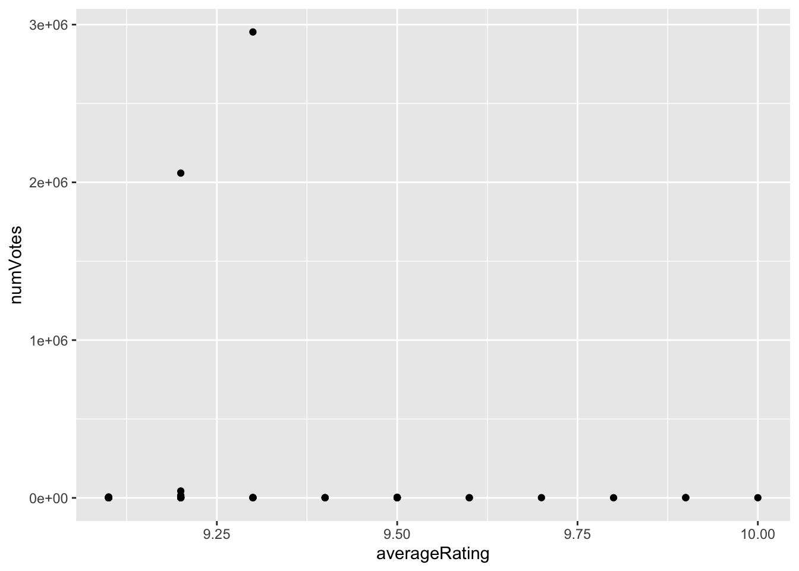
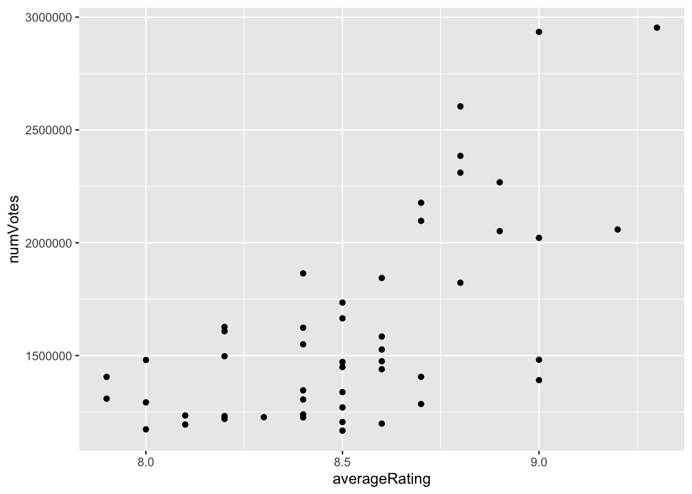
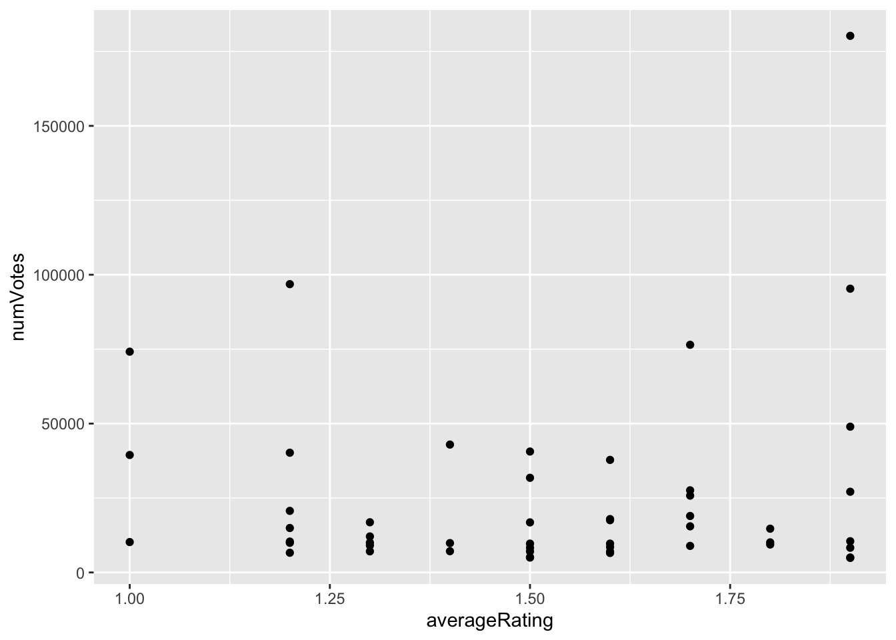
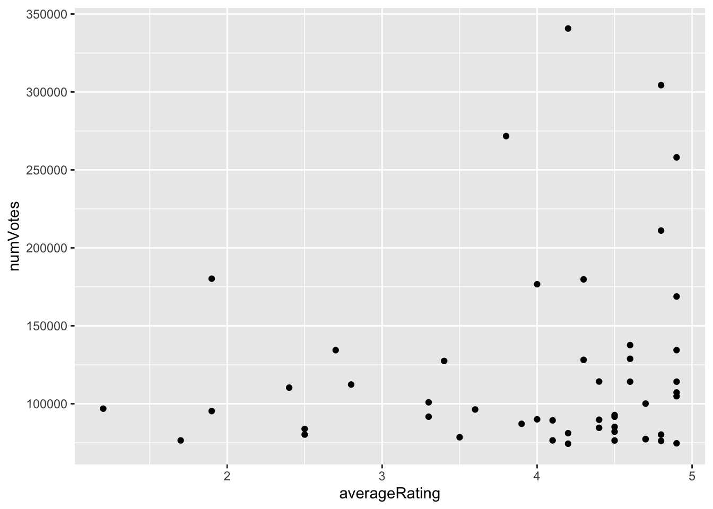

Rows: 13886887 Columns: 6
── Column specification ────────────────────────────────────────────────────────
Delimiter: "\t"
chr (6): nconst, primaryName, birthYear, deathYear, primaryProfession, known...
ℹ Use `spec()` to retrieve the full column specification for this data.
ℹ Specify the column types or set `show_col_types = FALSE` to quiet this message.
Warning: One or more parsing issues, call `problems()` on your data frame for details,
e.g.:
dat <- vroom(...)
problems(dat)
Rows: 11176312 Columns: 9
── Column specification ────────────────────────────────────────────────────────
Delimiter: "\t"
chr (8): tconst, titleType, primaryTitle, originalTitle, startYear, endYear,...
dbl (1): isAdult
ℹ Use `spec()` to retrieve the full column specification for this data.
ℹ Specify the column types or set `show_col_types = FALSE` to quiet this message.
Rows: 8580365 Columns: 4
── Column specification ────────────────────────────────────────────────────────
Delimiter: "\t"
chr (4): tconst, parentTconst, seasonNumber, episodeNumber
ℹ Use `spec()` to retrieve the full column specification for this data.
ℹ Specify the column types or set `show_col_types = FALSE` to quiet this message.
Rows: 1489867 Columns: 3
── Column specification ────────────────────────────────────────────────────────
Delimiter: "\t"
chr (1): tconst
dbl (2): averageRating, numVotes
ℹ Use `spec()` to retrieve the full column specification for this data.
ℹ Specify the column types or set `show_col_types = FALSE` to quiet this message.
Rows: 10515996 Columns: 3
── Column specification ────────────────────────────────────────────────────────
Delimiter: "\t"
chr (3): tconst, directors, writers
ℹ Use `spec()` to retrieve the full column specification for this data.
ℹ Specify the column types or set `show_col_types = FALSE` to quiet this message.
Warning: One or more parsing issues, call `problems()` on your data frame for details,
e.g.:
dat <- vroom(...)
problems(dat)
Rows: 86651930 Columns: 6
── Column specification ────────────────────────────────────────────────────────
Delimiter: "\t"
chr (5): tconst, nconst, category, job, characters
dbl (1): ordering
ℹ Use `spec()` to retrieve the full column specification for this data.
ℹ Specify the column types or set `show_col_types = FALSE` to quiet this message.
#| label: 'name_basics_filter' #| cache: true NAME_BASICS <- NAME_BASICS |>filter(str_count(knownForTitles, ",") >1)#| label: 'title_ratings_tail' TITLE_RATINGS |>ggplot(aes(x=numVotes)) +geom_histogram(bins=30) +xlab("Number of IMDB Ratings") +ylab("Number of Titles") +ggtitle("Majority of IMDB Titles Have Less than 100 Ratings") +theme_bw() +scale_x_log10(label=scales::comma) +scale_y_continuous(label=scales::comma)
Warning: There were 2 warnings in `mutate()`.
The first warning was:
ℹ In argument: `birthYear = as.numeric(birthYear)`.
Caused by warning:
! NAs introduced by coercion
ℹ Run `dplyr::last_dplyr_warnings()` to see the 1 remaining warning.
Warning: There were 3 warnings in `mutate()`.
The first warning was:
ℹ In argument: `startYear = as.numeric(startYear)`.
Caused by warning:
! NAs introduced by coercion
ℹ Run `dplyr::last_dplyr_warnings()` to see the 2 remaining warnings.
Warning: There were 2 warnings in `mutate()`.
The first warning was:
ℹ In argument: `seasonNumber = as.numeric(seasonNumber)`.
Caused by warning:
! NAs introduced by coercion
ℹ Run `dplyr::last_dplyr_warnings()` to see the 1 remaining warning.
TITLE_PRINCIPALS[TITLE_PRINCIPALS =="\\N"] <-NA
TASK 2 - QUESTIONS
How many movies are in our data set? How many TV series? How many TV episodes?
ANSWER : MOVIES TOTAL = 118546, TV series = 28745 , tv episodes = 121731
`summarise()` has grouped output by 'titleType'. You can override using the
`.groups` argument.
a =filter(df,titleType =="movie") b =filter(df,titleType =="tvEpisode") c =filter(df,titleType =="tvSeries")
Who is the oldest living person in our data set?
Need name, birth year = oldest and deathyear= NA
ANSWER : Assuming the oldest person alive is represented by deathYear = NA, for the oldest person alive greater than 1917 [oldest person alive] ,from our data set, there are 89 people still alive
oldest_person <- NAME_BASICS |>filter(birthYear >1917, is.na(deathYear)) |>arrange(birthYear) |>slice_head(n=89) #There are 89 names born on 1918, deathYear= NA
There is one TV Episode in this data set with a perfect 10/10 rating and at least 200,000 IMDb ratings. What is it? What series does it belong to?
I Joined tilebasics where titletype = ‘tvepisode’ to titleratings using tconst, filter average rating = 10 ANSWER : The TV episode with perfect 10 rating, at 230087 votes, is Ozymandias at seson 5, episode 14
rating <- TITLE_RATINGS |>filter(averageRating ==10, numVotes >=200000) #This gives me tconst where rating =10 + >200000title_a <- TITLE_EPISODES |>filter(tconst =="tt2301451") # identify for unique episodetitle_b <- TITLE_BASICS |>filter(tconst =="tt2301451") # identify for unique episoded = rating %>%left_join(title_a, by ="tconst") #join for full viewe = d %>%left_join(title_b, by ="tconst") #further join for full view
What four projects is the actor Mark Hamill most known for?
I used name basics to filter to actor Mark Hamil , used titlebasics to get tittle of projects
ANSWER: Actor Hamil is known for Castlevania: Nocturne [tvSeries], Drifting Home [movie], Boruto: Naruto Next Generations [ tvSeries]
What TV series, with more than 12 episodes, has the highest average rating?
ANSWER: titletype = ‘tvseries’ does not contain episodenumber, unable to count episodes thus identify episodes with count grater then 12. However the ‘tvseries’ with highest rating is = Cumartesi-Pazar Surpriz
high_avrg <-full_join(TITLE_BASICS,TITLE_RATINGS, by ='tconst')high_avrg_episode <-full_join(TITLE_EPISODES,high_avrg, by ='tconst')m = high_avrg_episode %>%select(tconst, episodeNumber, titleType, primaryTitle, averageRating) n <- m |>filter(titleType=="tvSeries") |>group_by(primaryTitle, averageRating) |>count(primaryTitle,sort =TRUE) |>arrange(desc(averageRating))
The TV series Happy Days (1974-1984) gives us the common idiom “jump the shark”. The phrase comes from a controversial fifth season episode (aired in 1977) in which a lead character literally jumped over a shark on water skis. Idiomatically, it is used to refer to the moment when a once-great show becomes ridiculous and rapidly looses quality.
Is it true that episodes from later seasons of Happy Days have lower average ratings than the early seasons?
ANSWER : Yes, it is true. Because the tvseries rating in 2008 have an average 5.4 rating, which is lower
Design a ‘success’ measure for IMDb entries, reflecting both quality and broad popular awareness. Implement your success metric using a mutate operator to add a new column to the TITLE_RATINGS table.
Choose the top 5-10 movies on your metric and confirm that they were indeed box office successes.
My strategy is to use the highest ratings > 9 and then filter to highest numVotes from there. It is how I get my top 5 below.
ANSWER: TOP 5 with high ratings, grater than 9.0, and with highest numVotes[IMDb entries], indicates success. See below success metrics
2. The Godfather,1972,Crime,Drama, ratings = 9.2, numVotes = 2058741
3. The Chaos Class, 1975, Comedy,ratings = 9.2,numVotes = 43592
4. Ramayana: The Legend of Prince Rama, 1993, Action,Adventure,Animation, ratings = 9.2, numVotes = 15433
5. The Silence of Swastika, 2021, Documentary,History, ratings = 9.2, numVotes = 10567
Choose 3-5 movies with large numbers of IMDb votes that score poorly on your success metric and confirm that they are indeed of low quality.# #My strategy is to get the worst ratings < than 1-2, and then filter to highest numVotes to get my worst performers below.
ANSWER: TOP 3 with high numVotes [even grater than some of the top 5], and lowest rating, at less than 2.0 rating, indicates low quality.
Perform at least one other form of ‘spot check’ validation.
I will use scatter plots using for my top 5 and low 3. Compare that to scatter plots with < / > 5 ratings- I am cutting at midpoint ratings because < 2 or > 9 may be too ambiguous - </> 5 will even out. to keep data plot small, I am using 50 points.
#Plot1 movies at > 9 ratings, a trend is not clearly visible, looks like a straight horizontal line with a couple of outliers.sucess1 <-full_join(TITLE_BASICS,TITLE_RATINGS, by ="tconst") |>select(tconst, titleType, primaryTitle, startYear,genres, averageRating,numVotes) |>filter(titleType =="movie", averageRating >9) |>group_by(primaryTitle) |>arrange(desc(numVotes)) plot1 =head(sucess1, 50) ggplot(plot1, aes(x=averageRating, y=numVotes)) +geom_point()

#Plot2 movies at ratings > 5, The grater the rating the higher the numVotes trendsucess2<-full_join(TITLE_BASICS,TITLE_RATINGS, by ="tconst") |>select(tconst, titleType, primaryTitle, startYear,genres, averageRating,numVotes) |>filter(titleType =="movie", averageRating >5) |>group_by(primaryTitle) |>arrange(desc(numVotes)) plot2 =head(sucess2, 50)ggplot(plot2, aes(x=averageRating, y=numVotes)) +geom_point()

#Below is the spot check for worst perfoming using same strategy for best perfomring [graphs]#PLOT3 movies at ratings <2 - slightly see pattern of the higher the rating the higher numVotes, however there is a less numVote concentrationsucess_not <-full_join(TITLE_BASICS,TITLE_RATINGS, by ="tconst") |>select(tconst, titleType, primaryTitle, startYear,genres, averageRating,numVotes) |>filter(titleType =="movie", averageRating <2) |>group_by(primaryTitle) |>arrange(desc(numVotes)) plot3 =head(sucess_not, 50) ggplot(plot3, aes(x=averageRating, y=numVotes)) +geom_point()

#PLOT 4 movies at ratings < 5 - the higher the rating the grater the numVotessucess_not2 <-full_join(TITLE_BASICS,TITLE_RATINGS, by ="tconst") |>select(tconst, titleType, primaryTitle, startYear,genres, averageRating,numVotes) |>filter(titleType =="movie", averageRating <5) |>group_by(primaryTitle) |>arrange(desc(numVotes)) plot4 =head(sucess_not2, 50) ggplot(plot4, aes(x=averageRating, y=numVotes)) +geom_point()

Come up with a numerical threshold for a project to be a ‘success’; that is, determine a value such that movies above are all “solid” or better.
My initial hypothesis was the higher the ratings the higher the numVotes will be. #I used an initial strategy where I picked very high ratings vs. very low ratings + spot check [graph] strategy where I cut data at midpoint ratings </>5 ratings.
After graphing both with a sample of 50 highest NumVotes, the graph strategy pointed to a better data visual, a clear trend. The results where visible following a trend where the higher the rating the higher the numVotes. #Unfortunatley strategy one was picking up multiple outliers, and could not base a recomendation on outliers only; a trend was not clearly visible with strategy 1.
Combining both together. I have identified as movies > 5 ratings with 2M NumVotes to be top performing movies. And movies at < 5 ratings with <25K numVotes as worst performers [for a shorter list of worst performers- low ratings with high numVotes will give me worst performers].
What genre consistently has the most “successes”? What genre used to reliably produced “successes” and has fallen out of favor?
From 1970-2010 most successful genres appear to be drama & crime.
What genre has produced the most “successes” since 2010? Does it have the highest success rate or does it only have a large number of successes because there are many productions in that genre?
From 2010-2020 Sci-Fi had a tick up - success, at ratings higher than 8.5.
What genre has become more popular in recent years?
Sci-Fi and Thrillers have risen in favor in most recent year
TASK 5 - Successful Personnel in the Genre
Identify (at least) two actors and one director who you will target as the key talent for your movie. Write a short “pitch” as to why they are likely to be successful. You should support your pitch with at least one graphic and one table.
ANSWER : Actor = Stephen King, for his popular movie ‘The Shawshank Redemption’ + Actress = Gundula Janowitz, for her popular movie ‘The Shawshank Redemption’.
Warning in full_join(actors, movies, by = "tconst"): Detected an unexpected many-to-many relationship between `x` and `y`.
ℹ Row 1 of `x` matches multiple rows in `y`.
ℹ Row 11806 of `y` matches multiple rows in `x`.
ℹ If a many-to-many relationship is expected, set `relationship =
"many-to-many"` to silence this warning.
movie_actress <-full_join(actress,movies, by ='tconst')
Warning in full_join(actress, movies, by = "tconst"): Detected an unexpected many-to-many relationship between `x` and `y`.
ℹ Row 1 of `x` matches multiple rows in `y`.
ℹ Row 29522 of `y` matches multiple rows in `x`.
ℹ If a many-to-many relationship is expected, set `relationship =
"many-to-many"` to silence this warning.
popular <- TITLE_RATINGS |>separate_longer_delim(tconst, ",")popular_actor_sucess <-full_join(popular,movie_actor, by ='tconst') |>filter(averageRating >5, numVotes >1000000) |>arrange(desc(numVotes)) |>slice_head(n=50) popular_actress_sucess <-full_join(popular,movie_actress, by ='tconst') |>filter(averageRating >5, numVotes >1000000) |>arrange(desc(numVotes)) |>slice_head(n=50)
TASK 6 - Nostalgia and Remakes
Find a classic movie to remake with your key talent. The original should have a large number of IMDb ratings, a high average rating, and not have been remade in the past 25 years.4
Once you have found your classic movie to remake, confirm whether key actors, directors, or writers from the original are still alive. If so, you need to contact your legal department to ensure they can secure the rights to the project. You may also want to include the classic actors as “fan service.”
ANSWER: I’m not a fan of remakes, so I would propose an entirely new movie based on the hit ‘The Shawshank Redemption’ - at the time it high very high ratings and votes. Give the people what they like. As a fan of Morgan Freeman and Stephen King, I would propose King write a new drama/thriller/inspirational, and Freeman star and produce it. Perfect combo and still alive doing great content. My team will contact them.
TASK 7 - PITCH and DELIVERY
In today’s environment, the pattern has been to remake and create movies that resemble a ‘passing the torch’ feeling.
Take for example a classic Hocus Pocus, or GhostBusters, or recet Bettle Juice, a recreation of the old. It start to look like a series and not a movie.
Why not create an entirely new generation of movies, to both inspire the new generations while at the same time rekindle the nostalgia of the older generations.
I propose a making of a new type of DRAMA, DRAMA101 - Where our movies will contain multiple genres, from drama, thriller [for oldies], inspirational [for sensitivity of today’s environment], touch of comedy [reflecting real life]. A mix. New.
Why not reflect the different stages/ feelings in one movie?
“Inside Out” you may be thinking…“childish” you say…
NO…rather this is reality, a movie should reflect a reality of life. A new Genre.
I propose to create a movie similar to the greatest hit ‘The Shawshank Redemption’, Inspired by Stephen King’s book “Rita Hayworth and Shawshank Redemption”, Produced and stared by Morgan Freeman , one of the greatest inspirational person in media now.
The movie could follow a similar plot as Stephen King book to start, innocent man/woman in jail, finds purpose in life. But instead of a killing it could be another type of crime, like crossing a border, or robbing to survive, or falsely accusations.
The name for the movie could be “Innocent until proven Guilty” narrated by Morgan Freeman and Edith Mathis. Stared by a fresh set of new diverse actors, never seen actors - the normal everyday person as an actor. Are you ready to bring the next genre of the movie future.

{kind=link}